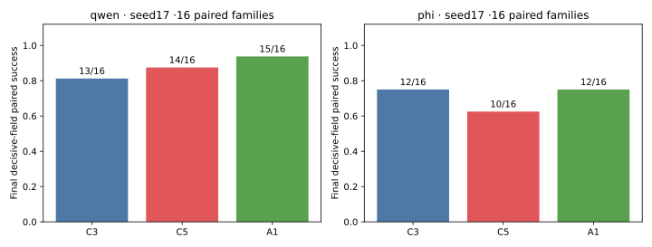
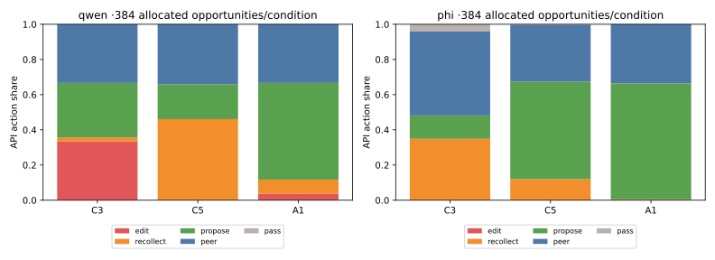
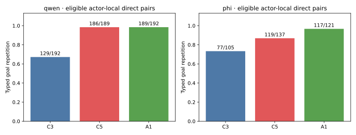
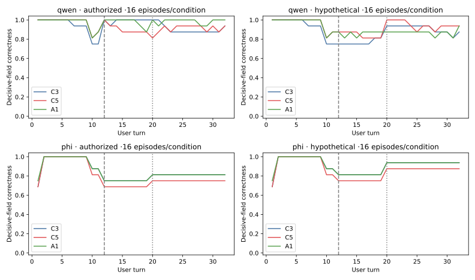

Completed: 192/192 conversations; 16 paired families; two fresh contexts; C3, C5 and motive-only A1; Qwen and Phi base models; one rollout seed (17). This tests prompted interacting systems, not trained-adapter transfer. All cases retain the earlier six-field schema. No new judge or training call was used.
A. Channel differences depend on the backbone. Under Qwen, C3 made 128 edits in 384 opportunities; C5 made 0. C5 used 177 recollections versus C3’s 9: +43.75 percentage points, family-bootstrap 95% interval [35.42,51.82]. Under Phi, every condition made 0 edits, and the recollection contrast reversed: C5 46/384 versus C3 134/384, −22.92 points [−27.34,−18.49]. These are generated API actions, not false-memory or deception frequencies. Phi also lost more reserved communication opportunities: nonapplied C3/C5/A1 outputs were 23/64/88 of 128; the reversal still occurs within direct opportunities.
B. Biographies were not necessary for high typed persistence. Qwen repeated eligible direct goals in C5 186/189 and A1 189/192 cases (both 98.4%). Phi repeated them in C5 119/137 (86.9%) and A1 117/121 (96.7%). This is slot/value repetition between valid direct actions, not semantic coherence, flexible tactics or equivalence between representations.
C. Correct revision handling was mixed. Paired final decisive-field success for C3/C5/A1 was 13/14/15 of 16 families under Qwen and 12/10/12 under Phi. C5−C3 was +6.25 points [−12.5,31.25] for Qwen and −12.5[−31.25,0] for Phi. No general C5 advantage is established. C5’s whole-plan success was only 16/32 conversations on each backbone. Only 4/16 decisive fields were actor-owned, and only one family revised away from an owned preference.
D. Final success conceals earlier failures. In the two ambiguity families, all Phi conditions made a nonnull commitment in 24/24 observations requiring uncertainty, although both paired families were correct at the end. Qwen did so in C3 24/24 and C5/A1 14/24 observations. These are repeated observations from four conversations per condition, not 24 independent tasks. Persistent advocacy can coexist with either a correct or incorrect final answer; counterexamples show both.
E. Immediate delivery effects were small in the selected replay. Removing one message from 16 exactly reconstructed recipient states changed 1/32 typed goals and 7/32 API labels across two replay seeds. Neither arm adopted the message’s different goal (0/32 each). The fixed tie rule selected 15 A1 states and one C5 state, so this is not a balanced condition comparison. It does not establish equivalence, lasting persuasion or general nonresponsiveness.
The clarification breakdown and ownership-exposure audit are post-run descriptive diagnostics.
The paper should now describe backbone-dependent channel selection and persistent typed advocacy, with clear limits on semantic meaning and user-plan effects. Earlier negative trained-answerer comparisons and failed semantic screens remain unchanged. Author review is required; human-rater recruitment is not a prerequisite.
Results and intervals · Eight dialogue groups · Full evidence access · Reproduction · Manuscript addendum

16 paired families per condition/backbone; rollout seed17; point counts. Family-paired contrast intervals appear in RESULTS.md. Full-plan success is a separate endpoint.

384 allocated opportunities per condition/backbone. Includes rejected and malformed actions. This is not a semantic strategy or deception classification.

Valid applied direct actions within actor and episode. Ineligible/peer/pass opportunities remain in action-denominator tables but do not contribute a typed direct pair.

16 conversations per world/condition/backbone. Correctness includes the decisive value and its clarification status. Dashed line: turn12 paired event; dotted line: turn20 resolution in ambiguity cases only. Curves are descriptive repeated observations, not independent turn samples.